Iniciando câmera...
Aligna
Processamento 100% no seu navegador via GPU

Monitor de Postura & Fadiga Ocular
Iniciando sistema...
Calibrar Distância Ideal (Foto)
Distância base: Não definida
EAR: -- | Distância: -- | Ciclo: 60s
Piscadas (PPM)
Avisos de Postura
Registros de Proximidade contínua
Limpar Histórico